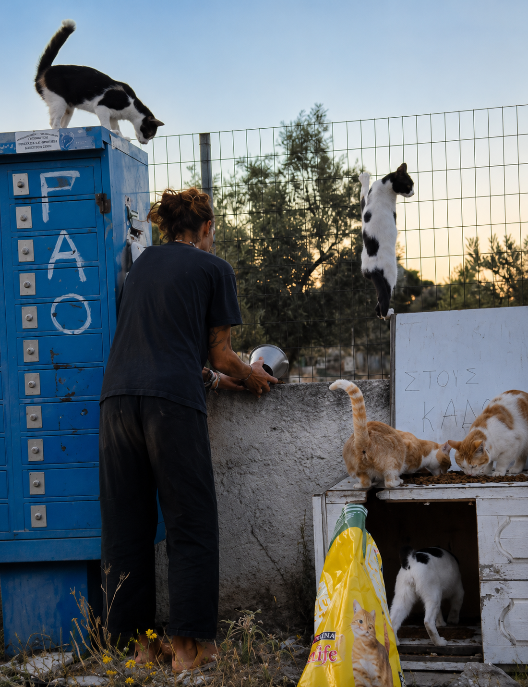

Bis zu 300 Katzen. Eine Frau. Und eine Initiative, die mitträgt.
In Artemida, nahe Athen, versorgt Margo seit vielen Jahren Tiere in Not: Sie füttert Futterkolonien, fährt täglich ihre Touren, pflegt kranke Tiere – und zahlt vieles aus eigener Tasche. Die Margo Animal Care Initiative macht aus dieser Ein-Frau-Leistung ein System, das trägt: medizinisch versorgt, transparent finanziert, verantwortungsvoll vermittelt.
Katzen nach aktuellem Stand – dazu Hunde und weitere Tiere
Futtertouren zu Kolonien und Pflegeplätzen
Transparenz über Kosten, Wege und Entscheidungen
Warum es uns gibt
Diese Initiative beginnt nicht bei null. Sie beginnt bei einer Frau, die seit Jahren tut, was sonst niemand tut.
In Artemida, nahe Athen, begann Margo vor vielen Jahren, Straßenkatzen zu versorgen. Aus wenigen Tieren wurden Dutzende, nach aktuellem Stand sind es 250 bis 300 – verteilt auf mehrere private Versorgungsorte, eine Farm und Futterkolonien rund um Artemida. Die Verantwortung wuchs. Margo blieb.
Es gab Wendepunkte: das Strandcafé, das sie betrieb – und der Brand, der es zerstörte. Was blieb, waren die Tiere. Und Margos Entscheidung, weiterzumachen, auch als es schwerer wurde als je zuvor.
Heute fährt sie täglich ihre Touren, füttert, behandelt, organisiert Tierarztbesuche – vieles davon aus eigener Tasche. Erste Katzen wurden bereits gemeinsam mit einer Partnerorganisation nach Deutschland vermittelt. Doch fast alles hängt an einer einzigen Person.
Genau hier setzt die Initiative an: Wir ordnen Wissen, machen Kosten transparent, bauen Vermittlungswege auf und verteilen die Last auf viele Schultern – damit Margos Lebenswerk nicht an Erschöpfung scheitert, sondern wächst.
Warum unsere Arbeit nötig ist
Straßentierleid ist rund um Artemida Alltag – und die, die dagegenhalten, sind fast immer Einzelpersonen. Was das konkret bedeutet, sehen wir bei Margo jeden Tag:
Diesen Realitäten begegnen wir:
- Unkastrierte Straßenkatzen vermehren sich schneller, als Hilfe wachsen kann – jedes Frühjahr beginnt der Kreislauf von vorn.
- Für Streuner gibt es kaum öffentliche Strukturen: keine Auffangplätze, kaum finanzierte Kastrationen, wenig medizinische Versorgung.
- Die Last liegt auf Einzelnen wie Margo – die füttern, behandeln, fahren und bezahlen, bis an die Grenze der Kraft.
- Das Wissen über rund 250–300 Tiere steckt in einem einzigen Kopf – verstreut über Nachrichten, Fotos, Sprachnotizen und Erinnerungen.
- Ohne Struktur muss Margo dieselben Fragen immer wieder beantworten – Zeit und Kraft, die den Tieren fehlen.
- Vermittlungen ins Ausland sind komplex: Gesundheitsnachweise, Transporte, Partnerprozesse – nichts davon gelingt nebenbei.
- Kranke, scheue und alte Katzen haben ohne Fürsprache und ehrliche Profile kaum eine Chance auf ein Zuhause.
Wir können nicht jede Straßenkatze retten. Aber wir können dafür sorgen, dass Margos Hilfe nie an Erschöpfung oder Chaos scheitert – sondern wächst.
Der Weg einer Katze bei uns
Acht Schritte – von der Straße in Artemida bis ins geprüfte Zuhause. Jeder Schritt wird dokumentiert, jede Vermittlung von Margo persönlich freigegeben.
- Erfassen & Kennenlernen. Jede Katze erhält einen Namen, ein Foto und einen Platz in unserer Übersicht – vom ersten Tag an.
- Tierärztlicher Check. Gründliche Untersuchung und Behandlung – die Grundlage für alles Weitere.
- Kastration, Impfung, Entwurmung. Der wirksamste Schritt gegen künftiges Leid – und Voraussetzung für jede Vermittlung.
- Genesung & Aufbau. Gutes Futter, Ruhe und Pflege bringen den Körper wieder zu Kräften.
- Charakter verstehen. Schmusig oder scheu, Einzelkatze oder sozial – wir beobachten genau, welches Zuhause wirklich passt.
- Profil erstellen. Fotos, Video, Gesundheitsblatt und eine ehrliche Beschreibung – die Grundlage jeder Vermittlung.
- Vermittlung über Partner. Gemeinsam mit unserer Partnerorganisation in Deutschland: Anfragen prüfen, Familie kennenlernen, Freigabe durch Margo.
- Angekommen – für immer. Mit Nachbetreuung: Wir bleiben ansprechbar, bis „vermittelt“ wirklich „angekommen“ heißt.
Wovon wir überzeugt sind
Jedes Tier zählt – auch Nummer 173. Bei 250–300 Katzen liegt es nahe, in Mengen zu denken. Wir tun es nicht: Jede Katze bekommt einen Namen, ein Profil und einen nächsten Schritt.
Kastration ist der wirksamste Tierschutz. Jede Kastration verhindert Generationen künftigen Leids. Deshalb ist sie bei uns Kernaufgabe, keine Nebensache.
Entlastung ist Tierschutz. Margos Kraft ist die wichtigste Ressource dieser Initiative. Wer die Helferin schützt, schützt jedes Tier, das von ihr abhängt.
Ehrlichkeit vermittelt besser. Wer eine Katze von uns übernimmt, kennt ihre Geschichte, ihre Stärken und ihre Baustellen. Überraschungen gefährden Tiere – Ehrlichkeit schützt sie.
Tierschutz scheitert selten am Herzen. Er scheitert an Erschöpfung, an Chaos, an fehlender Struktur. Genau dort setzen wir an – mit Systemen, die tragen.
Unsere Vision
Eine Region, in der keine Straßenkatze unbemerkt leidet – und in der Menschen, die helfen, nicht daran zerbrechen, sondern getragen werden.
Unsere Mission
Wir verwandeln Margos jahrelange Ein-Frau-Arbeit in ein getragenes, transparentes System – von der Straße in Artemida bis ins geprüfte Zuhause. Konkret heißt das:

Prinzipien, Wirkung & unsere fünf Systeme
Sechs Prinzipien, die uns leiten · was unsere Arbeit bewirkt · und die fünf Systeme, mit denen wir Margo Schritt für Schritt entlasten – ausführlich auf einer eigenen Seite.
Unser Ansatz im Detail
Das geplante Margo Care Center
Heute leben Margos Schützlinge verteilt: an mehreren privaten Versorgungsorten, auf einer Farm und in Futterkolonien rund um Artemida. Das geplante Care Center führt zusammen, was zusammengehört – ein Ort für Ankunft, Genesung und den Abschied ins neue Leben:
Margos Rolle
Margo ist Ursprung, Herz und Maßstab dieser Initiative. Sie kennt jede Katze, jede Kolonie, jede Geschichte – ein Wissen, das über Jahre gewachsen ist und das wir jetzt gemeinsam sichern, damit es nie verloren geht.
Ihre Rolle verändert sich dabei bewusst: weg vom Alleine-alles-Tragen, hin zum Herzstück eines getragenen Systems. Über jedes Tier und jede Vermittlung entscheidet weiterhin sie – Verwaltung, Kommunikation und Struktur übernehmen andere.
Unsere wichtigste Regel: Margo bekommt keine Verwaltungsarbeit. Sie gibt ihr Wissen und ihre Nähe zu den Tieren – wir bauen daraus Struktur.

Die Route hinter der Fürsorge
Begleite die täglichen Wege zu den Kolonien, Pflegeplätzen und der Farm rund um Artemida – Station für Station, in Bildern erzählt. So wird sichtbar, was Fürsorge im Alltag wirklich bedeutet.
Die Versorgungsroute erlebenWie wir wachsen wollen
Heute bauen wir das Fundament: fünf Entlastungssysteme für Wissen, Vermittlung, Organisation, Finanzierung und Kommunikation – beginnend mit den ersten 20 Katzen, ihren Profilen und einer ehrlichen Kostenübersicht.
Morgen wird Vermittlung planbar: Geprüfte Profile gehen an Partnerorganisationen, Patenschaften decken laufende Kosten, Helfer übernehmen klar beschriebene Aufgaben.
Übermorgen entsteht das Margo Care Center – ein Ort, der Ankunft, Pflege und Vermittlung unter einem Dach vereint und Margos Wissen weiterträgt.
Wir wachsen nicht um des Wachstums willen – sondern genau so schnell, wie es Margo und den Tieren guttut.
Werde Teil der Initiative
Es gibt viele Wege zu helfen – und gerade jetzt, in der Aufbauphase, zählt jeder doppelt. Besonders wertvoll sind aktuell: Hilfe bei Katzenprofilen und Übersetzungen, Kontakte zu Tierschutzorganisationen, Patenschaften sowie medizinische und praktische Unterstützung. Sag uns einfach, was zu dir passt – oder sieh dir die konkreten Rollen an.


Margo hat gezeigt, was eine Einzelne tragen kann. Jetzt zeigen wir, was eine Gemeinschaft trägt.
Margo hat nie aufgehört zu helfen.
Jetzt hört sie auf, allein zu sein.